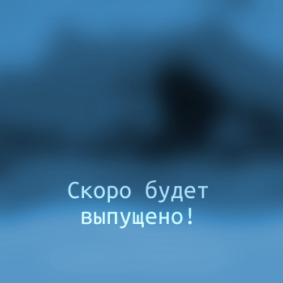
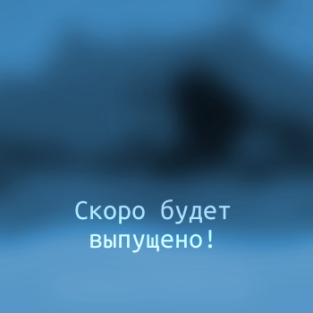

Фохроер композитор

 |
 |
|
Скачать на BandcampПрослушать на SoundCloudСкачать архив с Яндекс.Диска |
Потом |
| Дата выпуска альбома: 10 ноября 2015 года | Дата выпуска альбома: ещё не выпущен |
|
 |
|
Скачать на BandcampПрослушать на SoundCloudСкачать архив с Яндекс.Диска |
Потом |
| Дата выпуска альбома: 10 ноября 2015 года | Дата выпуска альбома: ещё не выпущен |
Пожертвовать с банковской карты или Яндекс.Денег
Пожертвовать Bitcoin: 1F5PKEzP8hF6Z1H4H5n9XfVsjnMVW1tyqz
Пожертвовать Litecoin: LYhDVB9C5dVPFeoXbXjMzB9wZvHs5cgTLP
Я долго тренировался, прежде, чем преставить вам этот альбом. Старательно писал электронную музыку. Была проделана продуктивная работа: я 4.5 года оттачивал своё музыкальное умение, 1.5 года изучал мастеринг, аккуратно и неторопливо делал музыкальные композиции и вот — представляю вам альбом "Мне Не Холодно".
И это ещё не конец. В следующем альбоме вы услышите, как я могу выдавать вокал в очень редком диапазоне. Как робот, как дикий зверь леопард, да и вообще я могу делать вобл бас без использования какой-либо техники, а только используя возможности своего организма. Сейчас провожу всякие эксперименты. Скоро на эту страницу поступят новые альбомы.
{kind=link}